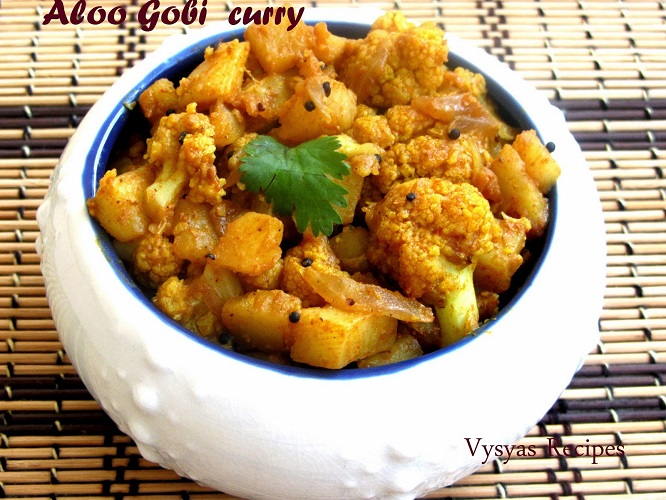

|
|
▢ પછી, ⅓ કપ સમારેલી ડુંગળી ઉમેરો. ઝીણી સમારેલી ડુંગળી પેનમાં ઉમેરી.
▢ ડુંગળીને મધ્યમ-ધીમી આંચ પર ત્યાં સુધી સાંતળો જ્યાં સુધી તે અર્ધપારદર્શક બને અને નરમ ન થાય. તેમને વારંવાર હલાવતા રહો. ડુંગળી સાંતળવી.
▢ આગળ, 1.5 ચમચી આદુ-લસણની પેસ્ટ અથવા વાટેલું આદુ-લસણ ઉમેરો. પેનમાં આદુ-લસણની પેસ્ટ ઉમેરવી.
▢ આદુ-લસણને થોડીક સેકન્ડ માટે મિક્સ કરીને સાંતળો અથવા ધીમા તાપે આદુ-લસણની કાચી સુગંધ અદૃશ્ય થઈ જાય ત્યાં સુધી સાંતળો. આદુ-લસણની પેસ્ટ સાંતળો.
▢ પછી નીચેના ગ્રાઉન્ડ મસાલા ઉમેરો: ¼ ચમચી હળદર પાવડર અડધી ચમચી કાશ્મીરી લાલ મરચું પાવડર ½ ચમચી ધાણા પાવડર પાનમાં મસાલા પાવડર ઉમેરવામાં આવે છે.
▢ ધીમા તાપે મસાલાને ખૂબ સારી રીતે મિક્સ કરો. તમે ગરમી પણ બંધ કરી શકો છો. મસાલા પાવડર સારી રીતે મિશ્ર.
▢ આગળ, 1 કપ સમારેલા ટામેટાં અને 1 સમારેલ લીલું મરચું ઉમેરો. ઝીણા સમારેલા ટામેટાં અને સમારેલાં લીલાં મરચાંને કડાઈમાં ઉમેરો.
▢ ટામેટાંને ખૂબ સારી રીતે મિક્સ કરો અને ધીમાથી મધ્યમ-ધીમા તાપે સાંતળવાનું શરૂ કરો. ટામેટાં સાંતળવા.
▢ ટામેટાં નરમ થાય ત્યાં સુધી સાંતળો, ચીકણું બની જાય અને તમે તપેલીની બાજુઓમાંથી તેલ છૂટતું જુઓ. ટામેટાં સાંતળવા. કોબીજની કઢી બનાવવી
▢ પછી, 2.5 થી 3 કપ સમારેલા કોબીજના ફૂલ ઉમેરો. જો તમે ઇચ્છો તો, તમે કોબીજને ગરમ પાણીમાં 15 થી 20 મિનિટ માટે બ્લેન્ચ પણ કરી શકો છો. ડુંગળી-ટામેટા મસાલામાં સમારેલા કોબીજના ફૂલો ઉમેરવામાં આવે છે.
▢ મસાલા સાથે કોબીજને ખૂબ સારી રીતે મિક્સ કરો. મસાલા સાથે કોબીજ સારી રીતે મિક્સ કરો.
▢ સ્વાદ મુજબ મીઠું નાખો. ખૂબ સારી રીતે મિક્સ કરો. તપેલીમાં મીઠું ઉમેરીને.
▢ પછી, ¾ થી 1 કપ પાણી અથવા જરૂર મુજબ ઉમેરો. પાનમાં પાણી ઉમેર્યું.
▢ પાનને ઢાંકણ વડે ઢાંકી દો અને કોબીજની કરીને ધીમાથી મધ્યમ તાપ પર જ્યાં સુધી કોબીજ નરમ ન થાય ત્યાં સુધી રાંધો. આચ્છાદિત તપેલીમાં ફૂલકોબીની કઢી રાંધવી.
▢ વચ્ચે તપાસો અને જો પાણી સુકાઈ જાય તો વધુ પાણી ઉમેરો. ફૂલકોબીની કરી રાંધવા.
▢ એકવાર ફૂલકોબી કોમળ થઈ જાય, ¼ ચમચી સૂકા મેથીના પાનનો ભૂકો (કસૂરી મેથી) અને ½ ચમચી ગરમ મસાલા પાવડર ઉમેરો. કોબીજની કઢીમાં સૂકા મેથીના પાનનો ભૂકો અને ગરમ મસાલા પાવડર ઉમેરવામાં આવે છે.
▢ ફરીથી મિક્સ કરો અને ગરમી બંધ કરો. વાનગીમાં થોડી ગ્રેવી હશે. જો તમને વધુ ગ્રેવી જોઈતી હોય, તો તમે વધુ પાણી ઉમેરી શકો છો. રાંધેલી કોબીજની કરી.
▢ છેલ્લે, 2 થી 3 ચમચી સમારેલી કોથમીર ઉમેરો. હલાવો અને બરાબર મિક્ષ કરો. રાંધેલી કોબીજની કરીમાં સમારેલી કોથમીર ઉમેરી.
▢ ફૂલકોબીની કઢીને ચપાતી, સાદા પરાઠા, પુદીના પરાઠા અથવા નાન સાથે ગરમ અથવા ગરમ સર્વ કરો. તમે તેને દાળ-ભાતના કોમ્બો સાથે સાઇડ ડિશ તરીકે પણ સર્વ કરી શકો છો.
|
|
- કેલરી: 25
- ફાઇબર: 3 ગ્રામ
- વિટામિન સી: RDI ના 77%
- વિટામિન K: RDI ના 20%
- ફોલેટ: RDI ના 14%
- વિટામિન B6: RDI ના 11%
- પેન્ટોથેનિક એસિડ: RDI ના 7%
- પોટેશિયમ: RDI ના 9%
- મેંગેનીઝ: RDI ના 8%
- મેગ્નેશિયમ: RDI ના 4%
- ફોસ્ફરસ: RDI ના 4%